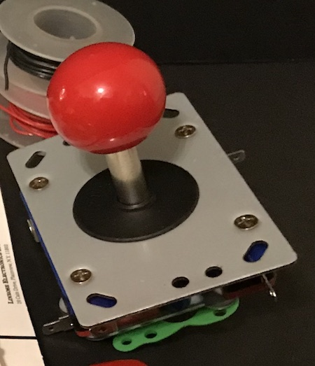
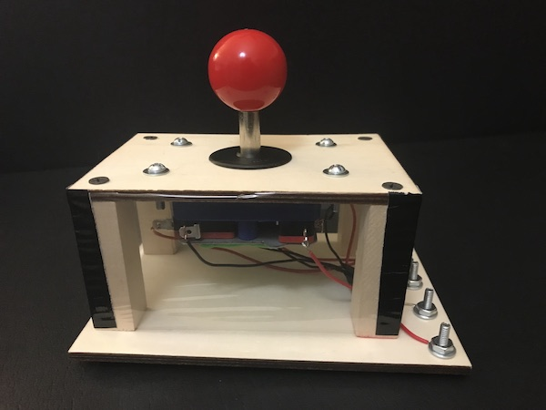

Other Switch Ideas
You can get arcade-style joysticks that you can use with the Makey Makey board. These types of joysticks have four switches that are activated when you push the joystick in each direction.
Make your own base for the joystick:
